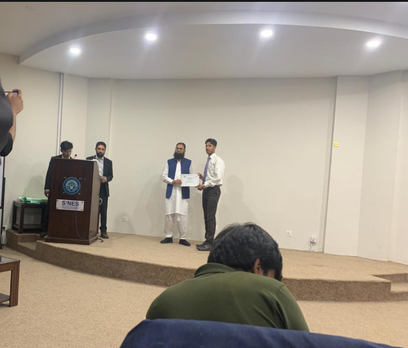
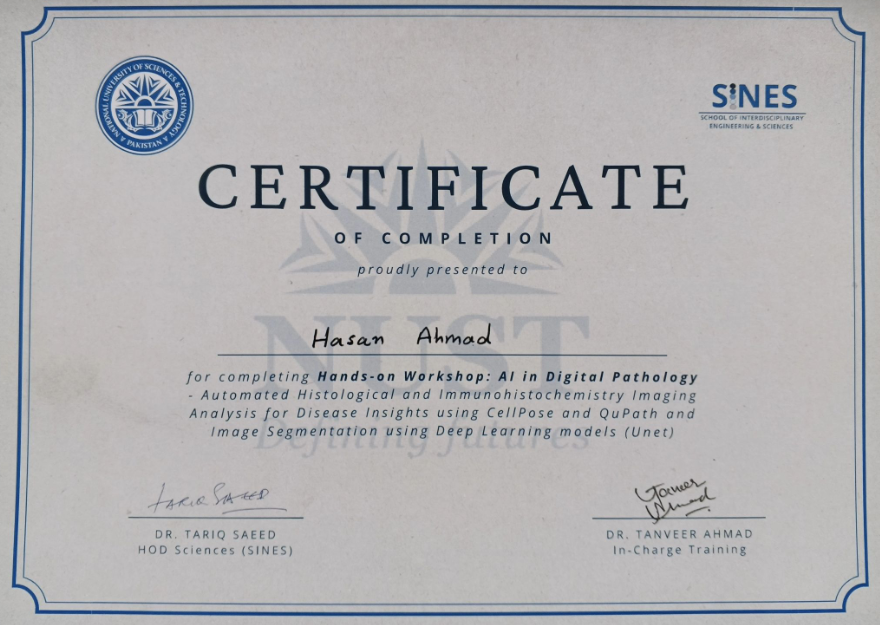

What the survey covers
Each theme explores a different dimension of how LLMs handle memory, context, and adaptation.
Dynamic memory mechanisms
KV-cache management, external memory stores, and how models decide what to retain vs discard across long contexts.
Adaptive context reliance
When should a model trust retrieved context over its parametric knowledge? This theme studies faithfulness, hallucination, and conflict resolution.
Test-time adaptation
Techniques to adapt model behavior at inference time using prompts, in-context learning, and lightweight parameter updates — without full fine-tuning.
Long-context reasoning
How models handle very long input sequences — positional encoding, attention sink, and the "lost in the middle" problem.
Continual & lifelong learning
How models can learn new information over time without catastrophically forgetting old knowledge — a key open challenge.
Efficient inference & compression
Quantization, pruning, and speculative decoding as tools to make adaptive LLMs practical — efficiency meets adaptability.
Survey paper in progress
DMTA-LLMs: Dynamic Memory and Test-Time Adaptation in Large Language Models
Format: LaTeX · Style: Springer LNCS · Status: In progress
Publications & working papers
Papers and preprints, listed as they stand — full drafts available on request.
-
DMTA-LLMs: Dynamic Memory and Test-Time Adaptation in Large Language Models In progressA comprehensive survey covering 30+ papers across six themes: dynamic memory, adaptive context reliance, test-time adaptation, long-context reasoning, continual learning, and efficient inference.LLMsSurveyMemoryTTASpringer LNCS
-
Adaptive Context Reliance Control in Noisy RAG: A Systematic Literature Review To be publishedA systematic literature review of 19 primary studies across four thematic clusters — failure characterization, training-time robustness, inference-time adaptation, and decoding/retrieval-triggering — accompanied by a working RAG pipeline exploring chunk size, embedding models, distance metrics, and noise injection.RAGSLRPRISMARetrieval
More publications will appear here as research progresses.
Workshops
Hands-on training that feeds directly into my research toolkit.
AI in Digital Pathology
SINES, NUST · May 11, 2026 · Full-day, hands-on
A full-day workshop on automated histological and immunohistochemistry (IHC) imaging analysis for disease insight, working directly on real stained tissue samples. Covered four applied projects: U-Net for bioimage segmentation, Cellpose for blood-cell segmentation, Cellpose3 for denoising corrupted pathology images, and Cellpose-SAM for next-generation cellular segmentation. Built proficiency with CellPose and QuPath for precise annotation and quantification, and applied U-Net deep learning to high-accuracy segmentation tasks — end to end, from raw imaging data to disease insight.

